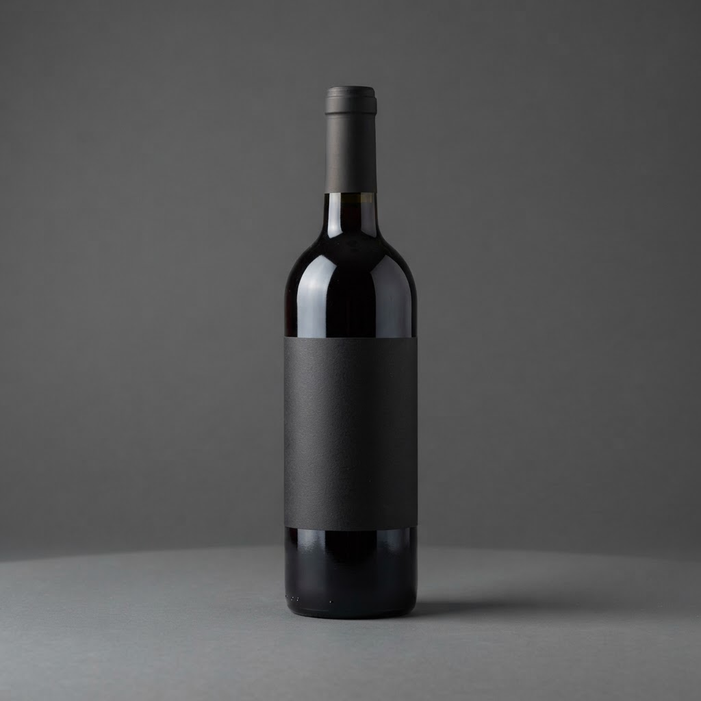

Сколько стоит купить вино с доставкой на дом спб в Петродворцовом районе

Содержание
Петродворцовый район славится удаленностью от центра, что затрудняет поиск оперативного сервиса в ночное время. Однако логистические алгоритмы позволяют организовать поставку напитков в любую точку Петергофа или Стрельны за один час, невзирая на плотность дорожного трафика и позднее время.
Сколько стоит купить вино с доставкой на дом спб в Петродворцовом районе
Вопрос стоимости логистических услуг определяется не только удаленностью маршрута, но и качеством исполнения обязательств. Надежный сервис не демпингует: цена услуги включает работу курьера, содержание автопарка и поддержание температурного режима при транспортировке. Качественная доставка — это соблюдение стандартов хранения. Если бутылка подвергается резким перепадам температур или интенсивной тряске при быстрой езде, структура напитка нарушается. Профессиональный исполнитель использует термоизолирующие кофры и фиксирующие модули, исключающие контакт стекла с жесткими элементами кузова. Оценка стоимости должна строиться на понимании того, что вы оплачиваете сохранность органолептических свойств товара. Мы анализируем каждый маршрут от склада до адресата, чтобы время прибытия не превышало шестидесяти минут. В эту логистическую схему заложена четкая дисциплина: курьер обязан выехать в течение пяти минут после подтверждения заказа. При расчете итоговой суммы учитывается сложность ночного выезда, когда доступность водителей ограничена, а нагрузка на инфраструктуру требует точного тайминга. Истинный уровень сервиса определяется отсутствием задержек и целостностью упаковки при любых погодных условиях.
Признаки качественного сервиса ночной доставки
Профессиональная доставка характеризуется прозрачностью процессов и соблюдением протоколов безопасности. Первый признак — наличие специализированного оборудования: датчиков контроля температуры и профессиональных систем крепления груза. Если компания заявляет, что доставка осуществляется за час, она должна обладать сетью распределенных складов, минимизирующих плечо доставки до конкретного микрорайона. Второй критерий — полнота сопровождающей документации и прозрачность системы расчетов, где каждый пункт сбора платежа подтверждается чеком. Третий аспект — компетенция сотрудников: курьер обязан знать правила обращения со стеклянной тарой и уметь оперативно ориентироваться в сложной навигации пригорода без звонков заказчику с уточнениями. Мы проводим внутренний аудит каждого инцидента, где время прибытия вышло за пределы норматива. Инженерный подход к логистике исключает фактор случайности. Если вы делаете выбор в пользу экспертного сервиса, вы получаете предсказуемость результата, исключающую риск получения поврежденного товара. Качественная доставка — это не просто транспортировка, а строгое соблюдение технологического регламента в ночное время, где каждый этап от звонка до передачи заказа отлажен до автоматизма.
Как проверить, что вино не испортилось при транспортировке?
Внимательно осмотрите пробку и уровень жидкости в горлышке: любые следы подтеков указывают на нарушение герметичности из-за перегрева или давления. Если вино после вскрытия имеет выраженный уксусный тон или осадок поднялся со дна при минимальном наклоне бутылки, продукт подвергся температурному шоку. Качественная доставка всегда исключает подобный ущерб благодаря амортизирующей упаковке.
Итог
Итог всегда один: назвать следующий шаг покупателю — оформить заказ и получить его в течение часа в своём районе.
Заказать доставку
Оформите заказ сейчас: привезём за 40-60 минут в любой район Петербурга, круглосуточно.
ПризывНаши статьи

Доставка вина спб 24 часа с доставкой в Петродворцовом районеПетродворцовый район славится исторической архитектурой и удаленностью от центральных магистралей, что создает сложности для ночного логистического сервиса. …